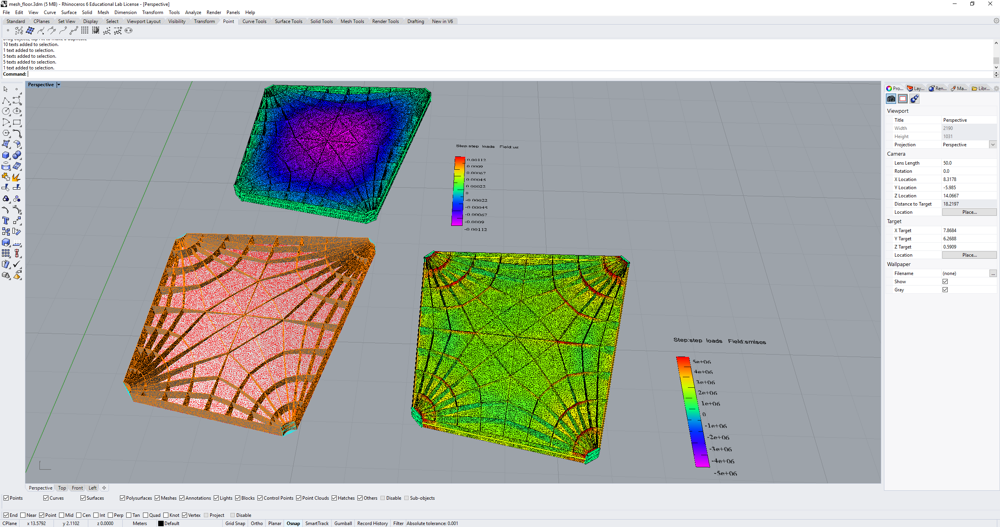
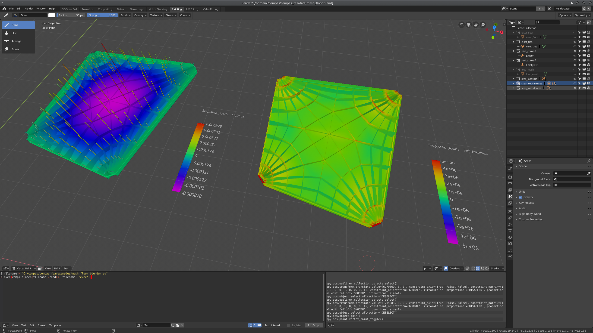

CAD
This page shows how to utilise computer aided design and graphics software with the compas_fea package, for assisting in creating a Structure and viewing results from an analysis. The blender (currently in development for beta version 2.80) or rhino module of the compas_fea package needs to be imported to have access to this functionality:
from compas_fea.cad import rhino # import the Rhino module for compas_fea
from compas_fea.cad import blender # import the Blender module for compas_fea
Geometry
Layers
In Rhino, the function add_nodes_elements_from_layers() is used to extract Rhino geometry data from the model workspace and place it in the Structure object. The function takes a list argument layers, containing the layer string names (or a single string for one layer) of where to scrape the geometric data from. The Rhino geometry in these layers will be given the same line_type element or mesh_type element when added to the Structure. The line_type and mesh_type are the string names of the element types for the classes in compas_fea.structure.element. All of the associated element nodes will be added automatically, there is no need to add Rhino points to represent these. For example, to add lines that are contained in Rhino layer 'elset_elements' to the Structure named mdl, as TrussElement objects, use the code below. The TrussElement objects will be sent to mdl.elements and the created nodes (the line endpoints) will be added to mdl.nodes.
rhino.add_nodes_elements_from_layers(structure=mdl, line_type='TrussElement', layers='elset_elements')
If mesh_type is given for 2D elements, for example as 'ShellElement' or 'MembraneElement', Rhino meshes on the given layers will have their faces individually added as elements to the Structure.
rhino.add_nodes_elements_from_layers(structure=mdl, mesh_type='ShellElement', layers='elset_shells')
If mesh_type is one of the solid element types 'HexahedronElement', 'TetrahedronElement', 'SolidElement' or 'PentahedronElement', Rhino meshes on the layers will be treated as a solid and not broken into individual faces.
rhino.add_nodes_elements_from_layers(structure=mdl, mesh_type='HexahedronElement', layers='elset_solids')
In Blender, the function with the same name (add_nodes_elements_from_layers) is used slightly differently, as there are no clear line type objects in Blender, instead, Blender meshes should exist in the given argument layers. Once the meshes are picked-up from the layers, the vertices of the Blender meshes will be added to the Structure object as nodes, along with line elements represented by the edges of the meshes and added as element type line_type, and shell elements represented by the faces of the meshes and added as element type mesh_type. If the entire Blender mesh is to be used as a solid element, similar to the Rhino procedure above, then the function must be given a solid element type for mesh_type.
blender.add_nodes_elements_from_layers(structure=mdl, line_type='TrussElement', mesh_type='ShellElement', layers=['elset_trusses', 'elset_shells'])
Adding nodes and elements from layers with the add_nodes_elements_from_layers() function, in both the Rhino and Blender cases, will return the lists of the node keys and element keys that were added.
nodes, elements = rhino.add_nodes_elements_from_layers(structure=mdl, line_type='TrussElement', layers=['elset_struts'])
>>> print(nodes) # print the nodes that were added
[0, 1, 2, 3, 4, 5, 6, 7, 8, 9, 10, 11, 12, 13, 14, 15, 16, 17, 18, 19, 20]
>>> print(elements) # print the elements that were added
[0, 1, 2, 3, 4, 5, 6, 7, 8, 9, ... 49, 50, 51, 52, 53, 54, 55, 56, 57, 58]
Local axes
When adding line and mesh edge geometry from layers to the Structure object as Element objects, the function add_nodes_elements_from_layers() will also attempt to store the elements’ local axis in the dictionary .axes of the Element object. To recall, this dictionary takes keys 'ex', 'ey' and 'ez' to store a list (the vectors) of each element’s local axis direction. The function will look at the name of the object through rs.ObjectName() in Rhino, check that it is in a .json dictionary type format, and then attempt to extract lists of these axis vectors from keys 'ex', 'ey' and 'ez'. The 'ez' direction is not explicitly needed for line type elements, as it is the direction the straight line passes through from start to end point. While 'ex' and 'ey' correspond to the local x (major) and local y (minor) axes, looking along the line element from start to finish, i.e. along 'ez'. Orientations 'ex' and 'ey' are important for getting the correct local orientation of beam cross-sections. In Rhino 6, the name string of the object should contain an underscore at the start, for example as '_{'ex': [1, 0, 0]}, as Rhino no longer accepts starting a name with curly braces. In Blender it is more straight-forward, simply add the axes to the .ex, .ey and .ez object properties as lists.
For shell elements, the local 'ex' axis is usually taken by default as the vector from the first node to the second, with 'ey' then orientated in the plane of the shell element and perpendicular to 'ex'. This leaves 'ez' as the normal of the shell element, taken by the cross-product of 'ex' and 'ey'. In the same way that add_nodes_elements_from_layers() will look at the name of the object to extract 'ex' and 'ey', the same will be done for shell elements. If the user wants each face of a mesh to have a different axes orientation, then each face should be spilt as its own object, with the object name containing the axes information for that face, or, the .axes attribute of the elements can be manually set after the elements have been added.
Adding sets
To add Rhino geometry held in layers as sets of the Structure object, use the add_sets_from_layers() function. This function requires the structure to add the set to, and the layers to extract Rhino geometry from. Each layer in the list layers should exclusively contain Rhino points for node sets or Rhino line or mesh objects for element sets, otherwise it is not possible to determine that all guids in that layer contribute to a node or element set. The name of the set does not need be given, as the function will ensure that added sets inherit the layer names as their keys. If the layer is nested such that it has a name 'a::b::c', then only the last part of the string, i.e. 'c', will be used as the name.
rhino.add_sets_from_layers(structure=mdl, layers=['nset_pins', 'nset_load', 'elset_elements'])
The Blender equivalent functions are add_nsets_from_layers() and add_elsets_from_layers(), where the former function will add vertices from Blender meshes and origins of empty objects as a node set, and the latter function will add an element set from edges and faces.
blender.add_nsets_from_layers(structure=mdl, layers=['nset_supports', 'nset_pins']) # add node sets
blender.add_elsets_from_layers(structure=mdl, layers='elset_elements') # add element set
Plotting data
Once the Structure object has been analysed (see the Analysis topic of the documentation) and the data stored in structure.results, it can be plotted in the CAD environment after a small amount of post-processing (see the Processing subsection below). The plotting of these data uses the plot_data() function of the Rhino and Blender modules, which requires the structure to get the data from, the step to plot, and the field of interest. For element based data, the iptype and nodal string arguments need to be given. Data are currently plotted on simple meshes representing the deformed geometry, these are simple tubular meshes of given radius to represent 1D elements, 2D meshes to represent shells and membranes, and separate voxel based viewing for 3D solid elements.
For Rhino, the meshes will be plotted in either the given layer name string, or a default layer named step-field, for which the layer will first be cleared if it already exists. This function call could look like the following, where a terminal print will show afterwards how much time the post-processing took:
rhino.plot_data(mdl, step='step_load', field='um', radius=0.1) # plot magnitude of displacements um for step_load
***** Data processed : 0.211 s *****
rhino.plot_data(mdl, step='step_load', field='sxx', nodal='max', iptype='mean') # plot stresses sxx for step_load
***** Data processed : 4.539 s *****
A typical Rhino and Blender environment after plotting data would look like:
 {kind=link}
{kind=link}
To plot voxel data for solid element results, use the .plot_voxels() function of the blender and rhino modules. This function uses the VtkViewer from the main compas.viewers package and requires that the user has the visualisation tool-kit (Vtk) installed. This function requires the following arguments: the structure object to extract data from, the step of interest, the field to plot, the iptype and nodal strings for element data, a cbar list to trim data, and an approximate voxel size vdx for interpolating data in space. The call and output from this function would look similar to:
blender.plot_voxels(structure=mdl, step='step_load', field='smises', vdx=0.1, cbar=[0, 1.5])
{kind=link}
Processing
A degree of data post-processing is performed on the raw data in structure.results before plotting, through the function postprocess() of the compas_fea.utilities.functions module. This post-processing requires NumPy and SciPy to be available for efficiency in handling large models, and so is carried out in a subprocess (via compas.utilities XFunc) for non-CPython based CAD environments like Rhino. The function calls a selection of other functions contained within the same module which do the following:
Calculate the deformed nodal co-ordinates with given
scalefactor, which becomes the plot meshes vertex co-ordinates.Process element data based on the
iptypeandnodalstrings, see the paragraph below for a more detailed explanation of what this involves.Normalise the data between -1 and 1 using the largest absolute value in the data.
Calculate the colour to plot each vertex of the plot meshes using a data value from a consistent colour spectrum.
Cap colour values based on the minimum and maximum trim values given in the
cbarcolorbar limits list.
Because the raw nodal data in structure.results contains single float values for each node, these values can be plotted directly as vertex colours on the plotting meshes. However, as there are in general multiple element data values for each element, some post-processing must be done to convert elemental data to suitable colour values at the nodes. The first step that the postprocess() function will do for elemental data, is convert all of the integration and section point data for an element to a user-directed single value with iptype. The string iptype can be 'mean', 'max' or 'min', to take the average, maximum positive or minimum negative value of the element data. The next step is to use this data and convert it a nodal value, as each node will connect to many elements and so have many adjacent element data values. Either 'mean', 'max' or 'min' is given as a string for nodal, giving then a value at each node based on all elements that connect to it. So for example, to find conservatively the most heavily loaded nodal Von Mises stress value from elemental data, one would use:
plot_data(mdl, step='step_load', field='smises', iptype='max', nodal='max') # max values of smises to nodal data
and to plot the most compressive axial stress values use (with compression negative and local ‘x’ axis):
plot_data(mdl, step='step_load', field='sxx', iptype='min', nodal='min') # min values of sxx to nodal data
Note: using nodal='mean' with a coarse finite element mesh could give unexpected results. This is because element data can change suddenly across elements in coarse meshes, leading to a mean value at a shared node that is somewhat poorly representative. This effect can be resolved by refining the mesh in the areas where stresses may change quickly or form concentrations, such as near supports, applied loads or areas of peak internal forces and moments.
Colorbar
A colorbar linked to the data will be plotted by default in each plotting layer and to the right-hand-side of the model, the size of which can be controlled by the float colorbar_size. The colorbar limits will range from negative to positive of the maximum data value of the field, even if the results are all positive or negative. The advantage of this, as opposed to using the contracted minimum to maximum range of the data set, is that positive values will always be red, orange and yellow, neutral values green, and negative values blue, indigo and violet. The extremes of the plotted data, as well a selection of evenly spaced intermediate values, will be written as text boxes along the colorbar with the zero point in the middle. If minimum and maximum trim values of the colorbar are given in the argument cbar when calling plot_data(), for example a maximum cbar[1] of 3 MPa, then the colorbar ends will cap at 3 MPa and plot red values for all data above 3 MPa. The step and field will also be displayed as a title to the colorbar, and any mode or frequencies placed at the bottom.
Principal stresses
As stress is a tensor, any point in the structure has a local axes orientation where maximum and minimum normal stresses occur orthogonally and with zero shear stress. These are the principal stress components 'smaxp' (maximum tensile, or least compressive) and 'sminp' (maximum compressive, or least tensile). By knowing for shell elements the 'sxx' (normal stress in x), 'syy' (normal stress in y) and 'sxy' (shear stress in x and y) values at integration points, the orientation of the principal stresses can be determined relative to the element’s local axes 'axes'. This calculation is based on elementary material mechanics (see Mohr Circles for reference) and has been performed in the plotting function plot_principal_stresses() for Rhino, which takes argument ptype as a string either 'sminp' or 'smaxp', a relative scale to draw the length of vector lines, and if needed a rotation of 90 degrees with rotate=1. A call of the experimental Rhino function (currently for triangular shell elements only) will produce the plots below, where lines are drawn to show max principal and min principal vectors:
rhino.plot_principal_stresses(structure=mdl, step='step_loads', ptype='sminp', scale=0.2) # min principal
rhino.plot_principal_stresses(structure=mdl, step='step_loads', ptype='smaxp', scale=0.2) # max principal
{kind=link}